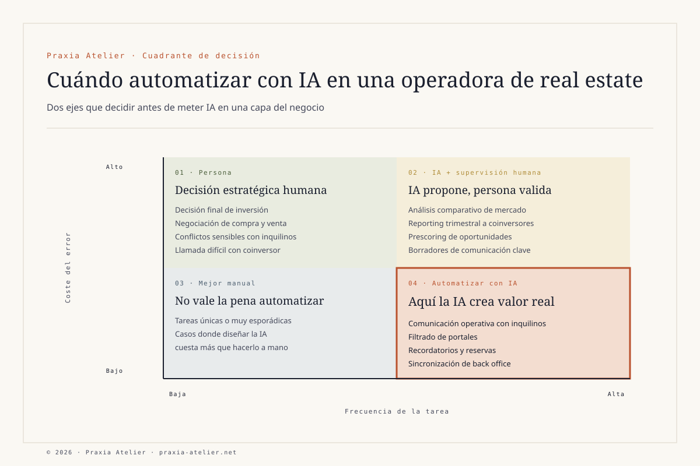

Qué se puede automatizar con IA en una operadora de real estate — y qué conviene que siga haciendo una persona.
Hay cuatro tareas donde la IA crea valor real en una operadora inmobiliaria, y cuatro donde destruye más del que crea. La diferencia no la marca la tecnología — la marca la naturaleza de la tarea.
La pregunta que más me hacen últimamente operadores y family offices con cartera inmobiliaria es la misma: "¿qué puedo automatizar con IA sin perder el control de lo que de verdad importa?". La pregunta correcta es otra.
Real estate es uno de los sectores donde la diferencia entre meter IA bien y meter IA mal se nota más rápido. Una operadora con quince inmuebles en gestión, un vehículo de coinversión privado y un equipo pequeño tiene cientos de microtareas operativas al mes — desde valorar una oportunidad de compra hasta responder a un inquilino que pregunta por la caldera. La tentación de automatizarlo todo es enorme. El daño que se puede hacer también.
Llevo varios años diseñando ecosistemas digitales para real estate, incluyendo proyectos con vehículo de coinversión privado entre socios y operadoras de inmuebles reformados. Lo que voy a contar aquí es lo que he aprendido sobre dónde la IA suma valor real y dónde, por el contrario, su uso ingenuo termina costando dinero, reputación o ambas cosas. Si estás considerando meter IA en tu operadora, esto te puede evitar dos o tres errores caros.
La pregunta correcta no es "qué automatizo"
La pregunta correcta es: "qué tarea descansa bien en la IA y qué tarea descansa bien en una persona — y por qué". Las dos opciones son legítimas. Lo que destruye valor es ponerlas en el lado equivocado.
La IA es muy buena en tareas con tres propiedades: volumen alto, patrón identificable y consecuencia limitada del error. Es muy mala en tareas con la propiedad opuesta — pocas decisiones, contexto único, consecuencia grande del error. La mayoría de los problemas que veo en operadoras inmobiliarias vienen de aplicar IA a tareas del segundo grupo porque técnicamente se puede, sin pensar si operativamente conviene.

Las cuatro tareas de IA en real estate donde sí suma valor real
Estas son las cuatro funciones donde he visto que la IA bien diseñada genera ahorro real y mejora la operación de una operadora inmobiliaria pequeña o mediana:
01 · Filtrado y prescoring de oportunidades de compra
Una operadora con criterios definidos (rango de zonas, metros cuadrados, precio por metro, estado del inmueble, antigüedad del edificio) recibe decenas de oportunidades al mes desde portales, agentes y redes propias. Filtrarlas a mano consume horas de un perfil senior que debería estar negociando, no leyendo fichas. Una IA con un buen prompt y acceso a los criterios preselecciona, descarta lo que no encaja y deja al equipo solo lo relevante. El equipo decide; la IA recorta el ruido.
02 · Comunicación operativa con inquilinos
Las preguntas frecuentes (cuándo se cobra, cómo funciona la caldera, qué hacer si hay una avería menor, cómo solicitar una renovación) son repetitivas y bien estructuradas. Una IA conversacional con base de conocimiento del inmueble y reglas claras de derivación responde la mayoría de las consultas frecuentes en minutos, deriva las que requieren juicio a una persona y deja registro de todo. El inquilino siente respuesta inmediata; el equipo se libera de gestionar lo trivial.
03 · Reporting periódico para coinversores
Una operadora con vehículo de coinversión tiene que reportar trimestralmente a sus socios: ocupación, ingresos, gastos operativos, plusvalías latentes, hitos. Construir ese informe a mano cada trimestre puede llevar varios días. Con los datos bien estructurados en el back office, la IA genera el primer borrador del informe en minutos — texto narrativo incluido. El equipo lo revisa, ajusta, valida y firma. Lo que era trabajo de varios días pasa a ser de una mañana.
04 · Análisis comparativo de mercado para tasación interna
Antes de cerrar una compra o fijar una renta, el equipo necesita comparar con inmuebles similares vendidos o alquilados en la zona. La IA puede agregar datos de portales públicos, identificar comparables relevantes y entregar un análisis preliminar mucho más rápido que a mano. Importante: el análisis es preliminar y orientativo, no sustituye una tasación profesional cuando hace falta una; pero como apoyo a la decisión interna del equipo, ahorra tiempo y mejora la consistencia.
Dónde la IA en real estate destruye valor — y conviene que decida una persona
Y ahora la otra mitad — la que casi nadie cuenta porque es menos vendible. Estas son las cuatro funciones donde meter IA con criterio simplista destruye más valor del que crea:
Funciones · IA
01 · Prescoring de oportunidades
Filtrado por criterios objetivos. Decide el equipo, la IA recorta el ruido.
02 · Comunicación operativa
Respuestas a preguntas frecuentes con derivación a humano cuando hace falta.
03 · Reporting trimestral
Borradores automáticos a partir de datos del back office. El equipo valida y firma.
04 · Análisis comparativo
Apoyo a decisión interna. No sustituye tasación profesional.
Funciones · Persona
01 · Negociación de compra y venta
Lectura del vendedor, ritmo, sensibilidad a la cifra. La IA no sabe leer una pausa.
02 · Decisión final de inversión
Coherencia con la estrategia del vehículo y del momento. Asunción de riesgo.
03 · Relación con coinversores
Confianza, llamada en momento difícil, gestión de expectativas. Trabajo de presencia.
04 · Conflictos con inquilinos
Casos sensibles (impago, daños, situación personal). Requieren juicio humano y empatía.
Negociar la compra de un inmueble no es solo procesar una cifra: es leer el ritmo del vendedor, su urgencia, sus dudas, lo que dice y lo que no. Una IA puede preparar el rango razonable; no puede sentarse en la mesa. La decisión final de inversión combina números con coherencia estratégica del vehículo, momento del mercado, capacidad de gestión del equipo y aceptación del riesgo. Todo eso es trabajo humano.
La relación con coinversores es lo más delicado. Cuando un trimestre va peor de lo esperado, el coinversor no quiere recibir un email automático con buenas palabras. Quiere una llamada de la persona que decide, asumiendo lo que pasa y explicándolo en su contexto. La presencia humana en momentos difíciles es lo que sostiene un vehículo a largo plazo. Si la IA gestiona esa conversación, el coinversor lo percibe — y la confianza se rompe sin que nadie se dé cuenta hasta que es tarde.
Y los conflictos con inquilinos — impagos, daños, situaciones personales complejas — requieren el tipo de juicio que solo una persona puede ejercer con responsabilidad. Una IA mal configurada puede generar una respuesta jurídicamente correcta pero humanamente desastrosa. La diferencia entre conservar a un inquilino o entrar en un proceso judicial está muchas veces en una conversación bien llevada — y eso no se automatiza.
Cómo decido caso a caso
Antes de meter IA en cualquier capa de una operadora, aplico tres preguntas concretas. Si las tres salen sí, automatizo con IA. Si una sale no, lo dejo en manos humanas:
- ¿La tarea ocurre con frecuencia suficiente para justificar el coste de diseño y mantenimiento de la automatización? Por debajo de cierto volumen, automatizar cuesta más que hacerlo a mano.
- ¿El coste de un error puntual es asumible y reversible? Una respuesta automática equivocada a un inquilino sobre la caldera se corrige en una llamada. Una decisión automática equivocada de comprar un inmueble cuesta meses y dinero.
- ¿Existe revisión humana significativa antes de actuar? La IA propone, una persona valida, esa persona firma. Si la IA actúa sola sin filtro humano en una decisión sensible, hay riesgo.
Lo que me llevo de aplicar IA a operaciones inmobiliarias
Después de varios años trabajando en esto, lo que más me ha sorprendido es la cantidad de proyectos que llegan al estudio con la idea de que "la IA va a transformar el negocio" y se sorprenden cuando la respuesta es: "la IA va a transformar lo aburrido. Lo que diferencia tu negocio sigue siendo trabajo humano". Es una respuesta menos heroica pero mucho más operativa.
Si estás operando una cartera inmobiliaria, gestionando un vehículo de coinversión o pensando en montar uno, mi recomendación es esta: antes de invertir en IA, dibuja el mapa de procesos y clasifica cada tarea. Lo que descansa en personas, lo apoyas con buenas herramientas. Lo que descansa en IA, lo diseñas con revisión humana en los puntos críticos. La diferencia entre una operadora que escala bien con IA y una que se rompe está en esa clasificación inicial — no en qué modelo de IA usas.
Preguntas frecuentes sobre IA en real estate
¿Qué tareas conviene automatizar con IA en una operadora de real estate?
Las que cumplen tres condiciones: alta frecuencia, patrón identificable y bajo coste del error. En real estate, encajan el filtrado y prescoring de oportunidades, la comunicación operativa con inquilinos, los borradores de reporting trimestral para coinversores y el análisis comparativo de mercado para decisión interna del equipo.
¿Qué tareas NO conviene automatizar con IA?
Las que combinan baja frecuencia, contexto único y alto coste del error: la negociación de compra y venta, la decisión final de inversión, la relación con coinversores en momentos delicados y los conflictos sensibles con inquilinos. La IA puede preparar información de apoyo, pero la decisión y la presencia humana son lo que sostiene el resultado.
¿Necesito tasación profesional aunque use IA para análisis de mercado?
Sí. La IA puede agregar comparables y entregar análisis preliminar útil para decisiones internas, pero las valoraciones formales requieren tasación profesional certificada cuando lo exija la regulación (financiación bancaria, herencias, garantías). El análisis con IA es apoyo, no sustituye al tasador colegiado.
¿Qué normativa hay que cumplir si uso IA en una operadora inmobiliaria?
Cualquier sistema con IA que afecte a personas — inquilinos, coinversores, empleados, candidatos — debe cumplir el RGPD y el EU AI Act, además de las normativas locales aplicables a la actividad inmobiliaria. La consulta jurídica con un abogado especializado es necesaria antes de desplegar IA en decisiones que tengan impacto sobre personas.
¿Cómo decido caso a caso si automatizar una tarea con IA?
Aplico tres preguntas: ¿la tarea ocurre con frecuencia suficiente para justificar el coste de diseño y mantenimiento? ¿el coste de un error puntual es asumible y reversible? ¿existe revisión humana significativa antes de actuar? Solo si las tres salen sí, automatizo con IA. Si una sale no, lo dejo en manos humanas con herramientas que apoyen pero no sustituyan.
Este artículo es contenido editorial que refleja experiencia operativa propia diseñando ecosistemas digitales con IA aplicada a real estate. No es asesoramiento jurídico, fiscal, financiero ni de tasación inmobiliaria individualizado. Marta Escobar Rojas no es tasadora colegiada, agente inmobiliaria registrada ni intermediaria financiera, y Praxia Atelier no presta servicios de profesión regulada.
Cualquier sistema con IA aplicada a decisiones que afecten a personas (inquilinos, coinversores, empleados) debe diseñarse cumpliendo el RGPD, el EU AI Act y las normativas locales aplicables en cada caso. Las valoraciones inmobiliarias formales requieren tasación profesional certificada cuando la regulación lo exija (financiación bancaria, herencias, garantías). El estudio coordina con tasadores, abogados y asesores fiscales colegiados cuando el proyecto lo requiere — la firma y la responsabilidad jurídica corresponden siempre a ellos. Información completa en Aviso legal · Alcance de servicios.
Te ayudo a decidir qué automatizar y qué no — antes de invertir.
30 minutos por videollamada. Si seguimos, lo aterrizamos en una Cápsula 01 (Ecosystem Blueprint) o, si necesitas IA conversacional real (Claude API o avatar), en el add-on premium con presupuesto personalizado.